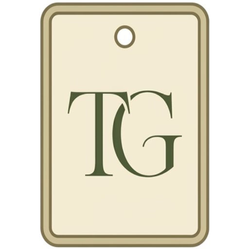

Specimen Tag · ≥64px
Favicon · shown at true browser size
Task Garden
Inbox (24)
GitHub
task-garden.local / plan / v1
Scale · pick the right master
16 ✓
32 ✓
48 ✓
48
72 ✓
112 ✓
At 16px
Tag — illegible
Bark frame + "TG" serif both mush
At 16px
Moss "T" — legible
Solid fill, one glyph, high contrast